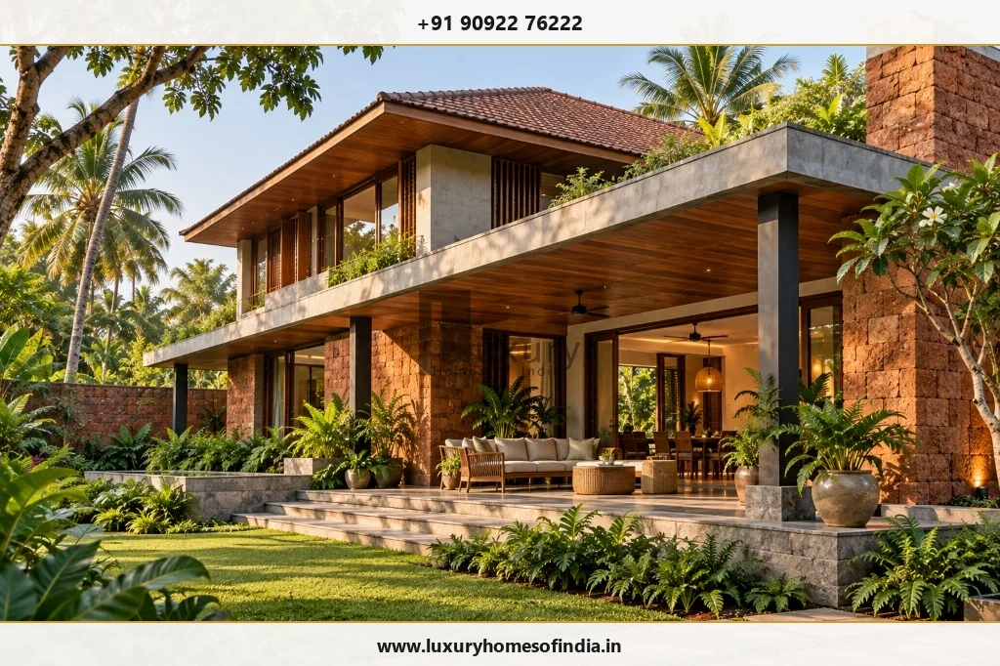

Turnkey Villa Construction in Chennai
Plan your villa as one coordinated project—from architecture and grounds to luxury interiors.
Executive Summary
Turnkey villa construction unites architectural design, structural engineering, civil execution, specialist amenities (pools, elevators, home automation), landscaped grounds, and luxury interior fit-outs into one master project contract. In Chennai, coordinating these work packages early prevents scope gaps, aligns budget expectations, and ensures seamless delivery.

Plan Your Villa as One Coordinated Project
A luxury villa is far more than a single residential building. Its architectural envelope, interior design, grand entrance, private gardens, outdoor verandas, swimming pool, and specialist amenities all contribute to how the property looks, feels, and functions every day.
Planning these elements together establishes a clearer project scope, coordinates interdisciplinary design decisions, and eliminates the risk of unresolved work between separate contractors. At Luxury Homes of India (LHI), our turnkey villa delivery brings architectural planning, civil construction, building services, and bespoke interiors into one integrated project workflow.
What Does Turnkey Villa Construction Include?
Turnkey villa construction is best evaluated through your contract's documented scope of work, rather than relying on marketing labels alone. The specific services, material grades, equipment inclusions, exclusions, and handover deliverables must be detailed in your agreement.
Depending on your project brief, a comprehensive turnkey villa scope typically covers:
- Bespoke Architectural Planning: Floor plans, elevation design, spatial circulation, daylighting, and Vastu alignment.
- Structural Engineering: Soil investigation, foundation design for heavy loads or high water tables, and seismic framing.
- Civil Construction Execution: Substructure, RCC framing, brick masonry, waterproofing, and structural steel execution.
- Building Services (MEP): Electrical conduits, high-capacity water sumps, sanitary piping, HVAC ducting, and surge protection.
- Luxury Interior Execution: Italian marble flooring, custom joinery, modular kitchens, wardrobes, and false ceiling lighting.
- Smart-Home Automation: Centralized lighting control, motorized curtains, access controls, and security integration.
- External Grounds & Landscaping: Compound walls, automated entrance gates, granite driveway paving, and garden drainage.
- Specialist Amenities: Private swimming pools, home elevators, rooftop entertainment decks, and pressure pumps.
- Completion & Handover: System hydrostatic testing, snagging rectification, warranties, and completion documentation.
Before work begins on site, clarify which work packages are included in your base contract, which are prime-cost allowances, and which require specialist external vendors.
Design the Villa and Its Grounds Together
A well-considered villa design connects indoor living areas seamlessly with the surrounding landscape. Plot entrances, vehicle parking, lawns, verandas, service yards, and site drainage should be planned as part of master site layout rather than treated as disconnected finishing tasks.
During initial planning, ensure your architectural layout supports:
- Living and dining rooms opening directly onto shaded outdoor verandas.
- Master suites positioned for optimal privacy from guest circulation paths.
- Kitchens and utility zones designed with practical service access for staff.
- Car parking foyers accommodating multiple vehicles with smooth turning radiuses.
- Soft landscaping, stone paving, and site contour levels aligned with rainwater drainage strategies.
- Concealed perimeter lighting and CCTV coverage for complete property security.
- Dedicated equipment rooms for swimming pool filtration, elevator controllers, and solar batteries.

Coordinated Design and Construction Execution
1. Architectural Planning & Master Layout
Begin with your plot orientation, family lifestyle requirements, and space targets. Review sunlight, wind direction, visual privacy, and outdoor connections. Address local authority development controls under CMDA building regulations early in the process.
2. Structural Engineering & Foundation Coordination
Custom villa features—such as double-height foyers, large clear-span living rooms, rooftop infinity pools, and wide glass openings—require structural engineering assessment. Foundation design must respond to geotechnical soil testing to ensure structural stability.
3. Civil Construction & Material Specifications
Translate architectural drawings into documented work packages. Establish exact material specifications, steel TMT grades, cement brands, waterproof membranes, and site execution schedules before procurement begins.
4. Luxury Interior Execution
Coordinate interior finishes, custom joinery, stone cladding, sanitaryware, false ceilings, and kitchen cabinetry directly with civil and MEP teams. Read our complete guide on luxury home interior design in Chennai.
5. Smart-Home & Electrical Integration
Plan home automation conduits, Wi-Fi access points, lighting scenes, audio wiring, and power back-up alongside structural and interior layouts to avoid surface chasing after plastering.
Specialist Features Need a Dedicated Plan
Luxury features such as private swimming pools, home elevators, and automated glass facades impact multiple structural, plumbing, and electrical packages. Their requirements must be integrated into early architectural engineering:
| Specialist Villa Feature | Key Architectural & Engineering Considerations |
|---|---|
| Private Swimming Pool | Structural RCC shell loading, multi-layer waterproofing, plant room space, balance tank drainage, and safety fencing. |
| Residential Home Lift | Lift pit depth, headroom clearance, 3-phase power supply, structural shaft reinforcement, and maintenance access. |
| Large Glazed Sliding Walls | Structural lintel deflection limits, thermal low-E glass specifications, sun shading louvers, and monsoon track drainage. |
| Whole-Home Automation | Central server panel location, low-voltage conduit routing, smart switch compatibility, and surge protection. |
| Landscaped Grounds & Lawns | Site gradient levels, subsurface drainage lines, automatic drip irrigation, outdoor stone durability, and garden lighting circuits. |
| Outdoor Kitchen & BBQ Deck | Weatherproof cabinetry, LPG gas line provision, outdoor electrical outlets, shade canopy structures, and wash basin plumbing. |

Planning for Your Specific Chennai Site
Every plot across Chennai's premier residential corridors—from East Coast Road (ECR) and Old Mahabalipuram Road (OMR) to Boat Club, Poes Garden, and Kotturpuram—requires a tailored site response:
- Thermal Comfort & Solar Shading: Orient major living spaces toward North and East. Shield West-facing walls with terracotta jaali screens, vertical timber louvers, or deep overhang verandas to cut cooling costs.
- Water Management & Heavy Monsoons: Design high-slope roof drainage, terrace rainwater downpipes, subterranean rainwater sumps, and multi-stage terrace waterproofing to withstand North-East monsoon downpours.
- Coastal Saline Protection: Properties along ECR or Neelankarai face salt-laden coastal air. Specify SS-316 grade external ironmongery, anti-corrosive concrete reinforcement coatings, non-porous granite/quartzite stones, and marine-grade exterior paints.
From Project Brief to Handover
- Understand the Vision: Share plot details, lifestyle needs, space targets, reference photos, and budget priorities.
- Coordinate the Design: Develop the building, interiors, services, and external spaces as related parts of the master project.
- Agree on the Scope: Document specifications, responsibilities, allowances, exclusions, and proposed site schedule.
- Execute and Complete: Progress against agreed drawings and specifications, completing testing, snagging, and final keys handover.
Let's Plan the Complete Villa—Not Just the Building
Bring your ideas, plot details, and priorities to our Chennai design center. Speak with Luxury Homes of India about connecting your architectural ambition with coordinated turnkey execution.
Call +91 90922 76222 Request Turnkey Proposal